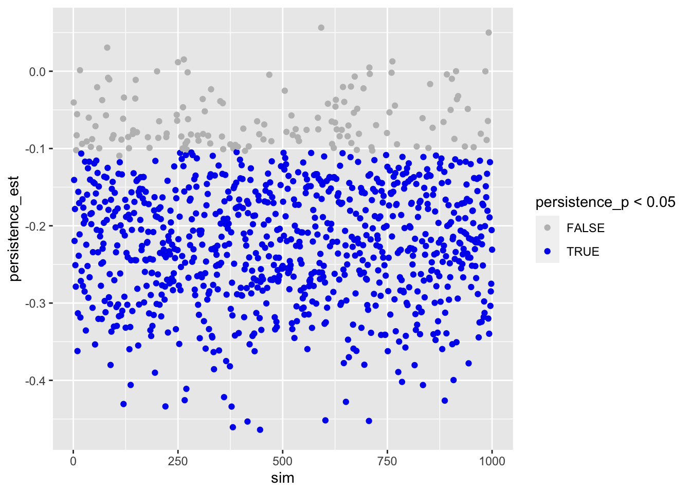
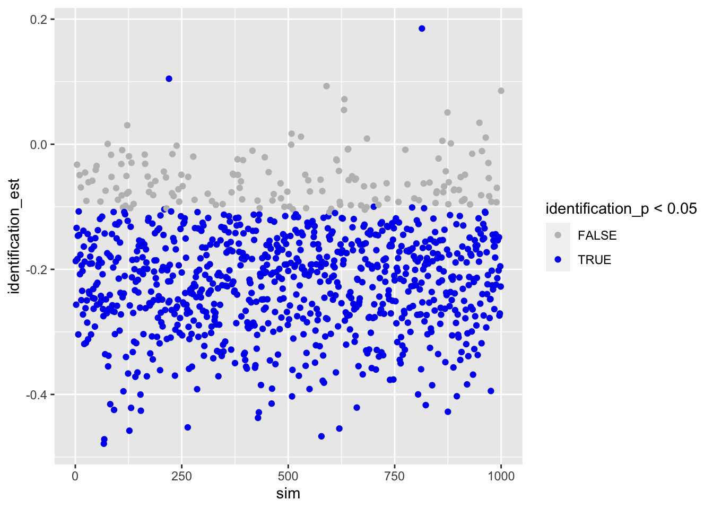

library(broom)
library(ggplot2)
library(magrittr)
library(tidyverse)Here, I run some power analysis for a study on online political participation. In the study, people use a social networking site (discord) on which they discuss political matters. On discord, people will participate in a group of 20 people (medium scale group communication). The dependent variable is how much people discuss (measured via number of words). We’re interested how different SNS designs affect communication.
The study design is as follows:
So these are 2 (identification) x 2 (persistence) experimental factors and a 3-way generalization factor (topic), resulting in a minimum of 12 groups. Hence, the minimum sample size 12 x 20 = 240 participants.
To calculate power, the question now is how often do we need to repeat this design to achieve sufficient power? Once, twice, thrice, etc? Hence, the factor to change/affect power is repetition, ranging from 1 to 10.
generate_design <- function(groupsize,
persis,
ident,
topics,
repetition,
...){
# function generates underlying (empty) datastructure
# count number of groups
groups <- persis * ident * topics * repetition
# make datastructure
expand.grid(
participant = 1:groupsize,
persistence = 1:persis - 1, # -1 to make binary
identification = 1:ident - 1,
topic = 1:topics,
repetition = 1:repetition) %>%
as.data.frame() %>%
rownames_to_column("id") %>%
mutate(
group = rep(c(1:groups), each = groupsize))
}
sim_d <- function(d_frame,
seed, # make results reproducible
effects, # vector of effects we anticipate
sd,
groupsize,
...){
# function to simulate data
# set.seed(seed) # uncomment to make results reproducible
# compute how many participants per cell (exp. condition)
n_cell <- groupsize_n * topics_n * repetition_n
# create the DV.
# For now, this will be standardized, bc. of lack of concrete data
# version 1: if-else # produces weird results
# d_frame %<>%
# mutate(words =
# ifelse(persistence == 0 & identification == 0, rnorm(n_cell, effects["pers0_iden_0_m"], sd),
# ifelse(persistence == 0 & identification == 1, rnorm(n_cell, effects["pers0_iden_1_m"], sd),
# ifelse(persistence == 1 & identification == 0, rnorm(n_cell, effects["pers1_iden_0_m"], sd),
# rnorm(n_cell, effects["pers1_iden_1_m"], sd))))
# )
# version 2: filter
d_frame$words <- 999
for(i in 1 : repetition_n) {
d_frame[d_frame$persistence == 0 & d_frame$identification == 0 & d_frame$repetition == i, ]$words <-
rnorm(groupsize_n, effects["pers0_iden_0_m"], sd)
d_frame[d_frame$persistence == 0 & d_frame$identification == 1 & d_frame$repetition == i, ]$words <-
rnorm(groupsize_n, effects["pers0_iden_1_m"], sd)
d_frame[d_frame$persistence == 1 & d_frame$identification == 0 & d_frame$repetition == i, ]$words <-
rnorm(groupsize_n, effects["pers1_iden_0_m"], sd)
d_frame[d_frame$persistence == 1 & d_frame$identification == 1 & d_frame$repetition == i, ]$words <-
rnorm(groupsize_n, effects["pers1_iden_1_m"], sd)
}
return(d_frame)
}
analyze_d <- function(object, ...) {
# function to analyze data and to extract results
# get means
means <- group_by(object, persistence, identification) %>%
summarize(mean = mean(words), .groups = 'drop')
# get estimates from regression
fit <- lm(words ~ persistence + identification, object)
fit_res <- tidy(fit)
# combine result
results <- data.frame(
per0_ide0_m = filter(means, persistence == 0, identification == 0)$mean,
per0_ide1_m = filter(means, persistence == 0, identification == 1)$mean,
per1_ide0_m = filter(means, persistence == 1, identification == 0)$mean,
per1_ide1_m = filter(means, persistence == 1, identification == 1)$mean,
persistence_est = fit_res[fit_res$term == "persistence",]$estimate,
persistence_p = fit_res[fit_res$term == "persistence",]$p.value,
identification_est = fit_res[fit_res$term == "identification",]$estimate,
identification_p = fit_res[fit_res$term == "identification",]$p.value,
n = glance(fit)$nobs
)
return(results)
}
des_sim_fit <- function(...){
# function to report and extract results
d_frame <- generate_design(...)
# words <- sim_d(d_frame, ...)
# d <- cbind(d_frame, words)
d <- sim_d(d_frame, ...)
analyze_d(d)
}# study design
groupsize_n <- 20
persis_n <- 2
ident_n <- 2
topics_n <- 3
repetition_n <- 6
# overall sample size
sample_size <- groupsize_n * persis_n * ident_n * topics_n * repetition_nWe define our study design as follows:
We then create an empty data frame, in which we will then later simulate the data.
# create design frame
d_frame <- generate_design(
groupsize = groupsize_n,
persis = persis_n,
ident = ident_n,
topics = topics_n,
repetition = repetition_n
)
d_frameCheck if data-frame is alright.
xtabs(~persistence + identification + topic + repetition, d_frame)Allocation of participants to experimental groups worked just fine.
We first need to define likely effects. We assume normal distribution, a mean of zero and a standard deviation of one. We can hence think of effects in terms of Cohen’s d: .2 = small, .5 = medium, and .8 = large.
| persistent | ephemeral | |
|---|---|---|
| identifiable | -.40 | -.20 |
| anonymous | -.20 | 0 |
This should lead to a main effect of persistence of d = -.20 and a main effect of identifiability of d = -.20.
pers0_iden_0_m <- 0
pers0_iden_1_m <- -.2
pers1_iden_0_m <- -.2
pers1_iden_1_m <- -.4
effects_est <- c(pers0_iden_0_m, pers0_iden_1_m, pers1_iden_0_m, pers1_iden_1_m)
names(effects_est) <- c("pers0_iden_0_m", "pers0_iden_1_m", "pers1_iden_0_m", "pers1_iden_1_m")
sd_est <- 1Let’s create a single data-set and analyze it.
d <- sim_d(d_frame, seed = 1, effects_est, sd_est, groupsize_n)Let’s check if means were created alright:
means <- d %>%
group_by(persistence, identification) %>%
summarize(mean = mean(words), .groups = 'drop')
means## # A tibble: 4 × 3
## persistence identification mean
## <dbl> <dbl> <dbl>
## 1 0 0 -0.00882
## 2 0 1 -0.197
## 3 1 0 -0.0403
## 4 1 1 -0.453Sample size small and single study, but general tendency seems to be alright.
Let’s also quickly run regression.
lm(words ~ persistence + identification, d) %>%
summary()##
## Call:
## lm(formula = words ~ persistence + identification, data = d)
##
## Residuals:
## Min 1Q Median 3Q Max
## -2.74332 -0.67846 -0.01185 0.69900 2.59851
##
## Coefficients:
## Estimate Std. Error t value Pr(>|t|)
## (Intercept) 0.04731 0.04506 1.050 0.29392
## persistence -0.14374 0.05203 -2.763 0.00581 **
## identification -0.30054 0.05203 -5.776 0.00000000934 ***
## ---
## Signif. codes: 0 '***' 0.001 '**' 0.01 '*' 0.05 '.' 0.1 ' ' 1
##
## Residual standard error: 0.9872 on 1437 degrees of freedom
## Multiple R-squared: 0.02774, Adjusted R-squared: 0.02639
## F-statistic: 20.5 on 2 and 1437 DF, p-value: 0.000000001667Results look reasonable. Both persistence and identification reduce disclosure.
n_sim <- 1000We run a power analysis with 1000 simulations.
sims <-
tibble(sim = 1:n_sim) %>%
mutate(
effect = map(sim,
des_sim_fit,
groupsize = groupsize_n,
persis = persis_n,
ident = ident_n,
topics = topics_n,
repetition = repetition_n,
effects = effects_est,
sd = sd_est)
) %>%
unnest(effect) %>%
as.data.frame()
simsWe visualize the results. First persistence:
ggplot(sims) +
geom_point(aes(sim, persistence_est, color = persistence_p < .05)) +
scale_color_manual(values = c("grey", "blue2"))
Then identification.
ggplot(sims) +
geom_point(aes(sim, identification_est, color = identification_p < .05)) +
scale_color_manual(values = c("grey", "blue2"))
We compute average effect size.
apply(sims[c("per0_ide0_m", "per0_ide1_m", "per1_ide0_m", "per1_ide1_m")], 2, mean)## per0_ide0_m per0_ide1_m per1_ide0_m per1_ide1_m
## -0.003559893 -0.202056583 -0.197057465 -0.399849369We compute power.
power <- data.frame(
persistence = sum(sims$persistence_p < .05 & sims$persistence_est < 0) / n_sim,
identification = sum(sims$identification_p < .05 & sims$identification_est < 0) / n_sim
)
print(power)## persistence identification
## 1 0.86 0.846